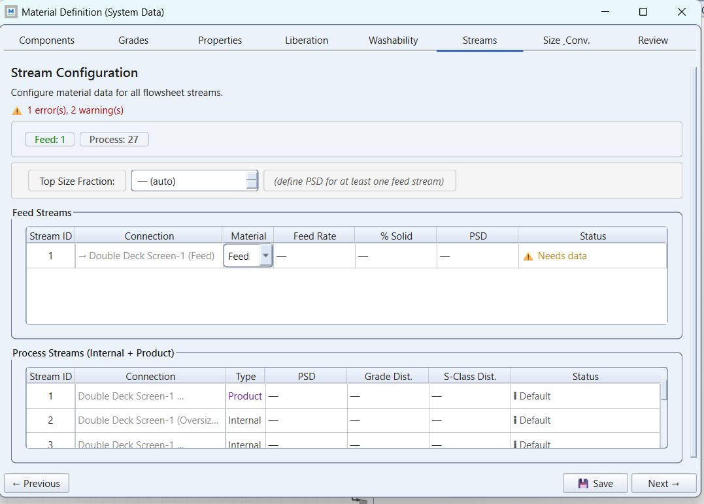
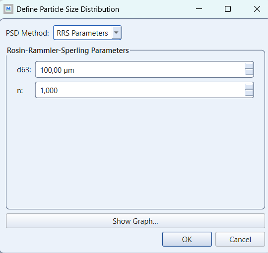

Assignment 2, step by step: the grinding circuit
module 3 · King 5.7-5.16, 4.4-4.7
Read in King: King 5.7–5.16 · Grinding · p. 155King 4.4–4.7 · Classification based on differential settling: the hydrocyclone · p. 92
On this page
What they ask
The sheet is Assignment_2.pdf (Bertil Pålsson, 2010-09-22, three pages): a conventional rod and pebble mill circuit in a complex-sulphide concentrator was sampled, and you are to build the equivalent circuit in MODSIM. Point by point:
1. The circuit (the figure on page 1). Fresh feed enters the rod mill. The rod mill discharge, the pebble mill discharge and a middling stream from the copper-lead flotation meet at a pump and go to one hydrocyclone. The cyclone underflow feeds the pebble mill, which also receives pebbles from the mine as its grinding media; the cyclone overflow goes to flotation.
2. The data (Tables 1 to 4). Table 1 gives measured solids flows, dilution ratios, solids densities and assays for copper, zinc, lead and sulphur of seven streams: rod mill discharge (38.5 t/h, D 0.483), pebbles (9.7 t/h, dry), pebble mill discharge (D 0.404, flow not measured), middlings from the CuPb flotation (13.1 t/h, D 3.128), the calculated cyclone feed (D 0.72), the cyclone underflow (76.0 t/h, D 0.308) and the overflow (D 1.244). Table 2a gives the size distributions of the fine products from 350 to 44 µm, Table 2b those of the rod mill feed and the pebbles from 50 mm down to 44 µm. Table 3 gives the machines: rod mill Ø2.4 × 3.6 m, 230 kW, 65 % of critical speed, 35 % filling, work index 12.0 kWh/t; pebble mill Ø3.75 × 4.525 m, 375 kW (600 kW maximum), 68 % of critical speed, about 35 % filling (45 % maximum), grate 4 × 8 mm; one 500 mm hydrocyclone at about 100 kPa with 68 µm, 58 µm and 0.24. Table 4 gives the minerals: chalcopyrite 4.2, sphalerite (about 60 % Zn) 4.0, galena 7.5, pyrite 5.0, gangue 2.7 g/cm³. Hydrocyclone data from part 01 of the course also apply.
3. The exercises (page 3). 1.1 calibrate a rod mill model: a circuit with only feed, discharge and mill water; system data with enough size fractions and the right number of minerals, real sieve and chemical analyses for feed and discharge; a suitable rod mill model; a first run compared with the known curves, adjusted until the discharge analysis fits reasonably; document. 1.2 calibrate the pebble mill under the condition that the model FAGM applies. 1.3 calibrate the hydrocyclone with the model CYCL and state the cut size for each mineral, with the correct feed pulp density. 1.4 draw the whole flowsheet, add mill and dilution water where needed, run a direct simulation with the calibrated units, compare with the measured data, adjust to hit the measured solids flows and sizes, document.
4. The report (page 3). For each simulation: a flowsheet with fly-outs (solids flow, water flow, weight per cent solids, an analysis); a table of simulated solids flows, water flows, pulp volumes, pulp densities and ; a table of condensed model and machine parameters; plots of measured and simulated size distributions; a discussion of what was and was not achieved.
How the work flows
The sheet has four numbered exercises and a report list, so it reads like a checklist: build, run, document. The work is a calibration loop, run three times on single units and once on the connected circuit, and the report is the record of those loops. Four things have different roles:
- Fixed for every run: the sampled data of Tables 1 to 4 and the flowsheet of the figure. The data do not close as printed (two flows are missing, one is "calculated"), so you close them on paper once, before MODSIM opens, and never touch them again.
- Chosen once: the material definition (size classes wide enough for 50 mm pebbles and a 10 µm overflow, the five minerals of Table 4), the rod mill model (the sheet leaves it to you) and the two models the sheet fixes: FAGM for the pebble mill, CYCL for the hydrocyclone.
- Turned in 1.1 to 1.3: only the parameters of the unit in front of you, with its measured feed as the input. One project per unit. You stop when the simulated discharge sits on the measured curve "reasonably well", the sheet's own words, and for the cyclone when both products and the 76.0 t/h underflow are reproduced at the correct feed pulp density.
- Changed in 1.4: nothing, at first. The three calibrated units are connected with the water additions and run as a direct simulation. Only then are parameters adjusted, one per run, to hit the measured solids flows and sizes, and every adjustment names the unit it belongs to and the reason.
- Compared at the end: simulated against measured, stream by stream: flows, , and the plots of measured and simulated size distributions the report list asks for.
In the sheet's words, to calibrate a unit is to give the model the measured feed and turn its parameters until the discharge matches the measured discharge; a direct simulation is a run of the connected circuit with the parameters found and nothing touched. The gap between that first circuit run and Table 1 is not an error to hide: the recycle changes what each unit sees, and explaining that gap is the discussion.
What you touch, read and wait for changes from one kind of run to the next:
| Run | What you change | What you read | When to stop |
|---|---|---|---|
| Unit run (1.1 to 1.3) | One parameter of the unit in front of you | The simulated discharge curve over the measured one at the six sieves of Table 2a; for the cyclone both products, the 76.0 t/h underflow and the cut size per mineral | When the curve fits reasonably well by a tolerance you state, and every parameter has a reason |
| Direct simulation (1.4, first run) | Nothing: the calibrated parameters, the water additions of step 3, the three feeds | Solids flows, water flows and of the seven streams against Table 1 | At once: it is the honest starting point of 1.4, not a result |
| Adjustment runs (1.4) | One parameter per run, named with its unit and its reason | The same seven streams, and whether the unit you touched still fits its own curve | When flows and sizes are within the tolerance you stated, or when you can say which measured value cannot be matched and why |
| Documentation | Nothing | Fly-outs, the flow table with pulp volumes and densities, the PSD plots with measured and simulated curves | When each of the four simulations has its four report items |
How to check a fit
- A fit is a plot. The measured cumulative per cent passing at the six sieves of Table 2a (350 to 44 µm) with the simulated curve on top. State the tolerance: so many per cent absolute at each sieve and so much on the . "Reasonably well" and "fair" are the sheet's own words, so your number is an assumption to declare (criterion 1).
- The data have a noise floor. The seven measured streams do not close exactly; step 1 gives you the closure error. No simulation can fit better than the data close, so when the residual is of that size, say so and stop.
- The cyclone is three checks at once. The underflow tonnage of 76.0 t/h, the two product curves, and the cut size per mineral read from the unit report, all at the correct feed pulp density (D 0.72). A cyclone fitted at the wrong pulp density passes the curves and fails the circuit.
- The circuit is Table 1. Solids flows of the seven streams and the of the overflow, which is the flotation feed. If the circuit misses, look first at the water additions and at the middlings (a 13.1 t/h stream with its own fine PSD and zinc-rich assay), then at the cyclone, and only last at the mills.
Key points
- Calibrate, connect, then adjust, in that order. Three units alone against their own curves, one connected circuit run with nothing touched, then one parameter per run with its reason. A circuit tuned before its units are calibrated fits the numbers and means nothing; the seminar will ask which unit each parameter belongs to.
- The sheet's data must close before MODSIM opens. Two flows are missing (pebble mill discharge, overflow) and one is "calculated" (cyclone feed). Solids balances give them: everything the pebble mill receives leaves it, so its discharge is the underflow plus the pebbles; the cyclone feed is the three pumped streams added up; the overflow is the cyclone feed minus the underflow; and the overflow must equal the fresh feed plus the pebbles plus the middlings, or the sampling is inconsistent. That check is your first table and the examiner's first look.
- The analyses are elements; MODSIM wants minerals. Copper, zinc, lead and sulphur assays become chalcopyrite, sphalerite, galena and pyrite by stoichiometry (the circuit-balancing lesson of Mineral Processing does exactly this), with the sphalerite at the sheet's 60 % Zn, the sulphur of the first three subtracted before the rest is called pyrite, and the gangue by difference. The solids densities of Table 1 are your check: a stream's mineral composition must reproduce its measured .
- Dilution ratios are the water. for every stream; the differences around the pump, the mills and the cyclone are the water additions the sheet tells you to place. The cyclone feed pulp density (the sheet's own "Note!") decides the cut size in CYCL, so it must be right before anything else is tuned.
- Cut size per mineral is the point of 1.3. A hydrocyclone classifies by settling, so a dense mineral cuts finer than a light one at the same : galena at 7.5 g/cm³ will report to the overflow at a smaller size than gangue at 2.7. Say which minerals recirculate and which escape, and what that means for the flotation feed.
- The rubric. Problem definition and assumptions; flowsheet and material definition; model selection and parameters; simulation results; discussion. The middle three are the calibrations; the discussion is why the circuit did or did not hit the measured data.
How to start, step by step
The figure on page 1 has no stream numbers, so here it is with the seven sampled streams named as in Table 1 and, at each, what the sheet gives you: a measured flow, a dilution ratio, a size distribution, an assay. Dashed lines are the water you place yourself in 1.4.
Close the solids balance of the sheet on paper
From Table 1: pebble mill discharge = underflow 76.0 + pebbles 9.7; cyclone feed = rod mill discharge 38.5 + pebble mill discharge + middlings 13.1; overflow = cyclone feed minus underflow. Check that the overflow equals 38.5 + 9.7 + 13.1.Turn the assays into minerals and check the densities
For each stream: chalcopyrite from Cu, galena from Pb, sphalerite from Zn at 60 % Zn, pyrite from the sulphur left after those three, gangue by difference. Compute the solids density from the mineral fractions and compare with the measured value in Table 1.Compute the water of every stream and the water additions
Water = dilution ratio × solids for each stream; then balance water around the pump (rod mill discharge + pebble mill discharge + middlings + dilution = cyclone feed), around the pebble mill (underflow water + mill water = discharge water) and around the cyclone (feed = underflow + overflow).Define the material once, wide enough for 50 mm feed and 10 µm products
New project; size classes in a root-two series from the 50 mm rod mill feed down to about 10 µm (24 or 25 classes); five minerals with the densities of Table 4; feed stream = rod mill feed with the size distribution of Table 2b and the mineral composition of the fresh ore (from the overflow assays, since overflow = fresh feed + pebbles + middlings, or from your own assumption, stated).The wizard is the same one as in Assignment 1 (its tabs are shown in the folds, from that assignment's screenshots); what changes is that this material has several minerals, three feeds and water additions. Open a fold, fill the tab, close it. Where the wizard's behaviour is Malla's reading rather than the sheet's word, the fold says so.
Components tab: the minerals behind the four assays, with their specific gravities
- Material type = Mineral.
- One row per mineral: chalcopyrite, sphalerite, galena, pyrite and a gangue. The sheet assays Cu, Zn, Pb and S; step 2 turned them into these minerals (Cu → chalcopyrite, Zn → sphalerite, Pb → galena, the sulphur that is left → pyrite, the rest gangue). "Match from database" fills the formula and the density of the real minerals if you prefer that to typing.
- Specific gravity per row: chalcopyrite 4.2, sphalerite 4.0, galena 7.5, pyrite 5.0 g/cm³, gangue about 2.7. Check them against the solids densities of Table 1: the mineral mix of each stream must reproduce the measured density, or the mineral conversion of step 2 is off.
- Magnetic susceptibility κ: leave it. No magnetic separation in this circuit.
See this window in the GUI

Grades tab: basis Mass, the minerals as fully liberated particles
- Basis = Mass.
- What the grade classes are for. They describe particles of mixed composition (a grain of galena locked in pyrite). The sheet gives assays per stream, not liberation data, and the grinding and cyclone models do not use particle grades, so the honest minimum is one class per mineral, each 100 % of its mineral: every particle is one mineral. Add class → one row per mineral → Normalize rows. Say in the report that liberation is not modelled (sheet 1.1 asks for "the right number of minerals", not for liberation). This is Malla's reading of the wizard; if it accepts the tab with no rows, leave it empty.
- Physical properties: both boxes off.
See this window in the GUI

Properties, Liberation and Washability tabs: nothing for a grinding circuit
- Use S-classes: off. The mill models take their parameters in the unit window (work index, mill size, speed, filling), not as size-dependent material properties.
- Liberation (Andrews-Mika): off. No liberation data in the sheet.
- Washability: nothing. Only for coal.
See this window in the GUI

Streams tab: three solids feeds and the water additions
- Feeds the wizard finds: the fresh feed into the rod mill, the pebbles into the pebble mill, the middlings from the copper-lead flotation into the pump, and the water additions you drew (mill water, dilution water). Each feed row says "Needs data" until it is filled.
- Solids feeds, from Table 1. Fresh feed: the rod mill discharge tonnage, 38.5 t/h dry (what goes in comes out of the mill). Pebbles: 9.7 t/h dry. Middlings: 13.1 t/h.
- Percent solids from the dilution ratio D: percent solids = 100 / (1 + D). Rod mill feed: mill water is added at the mill, so the feed itself is close to dry unless the sheet says otherwise (an assumption to state); pebbles: dry, 100 %; middlings: D 3.128 → 24.2 % solids.
- Water additions. A water feed is a stream with solids 0 and its water flow (the wizard's feed dialog, solids feed rate 0 and the water where it asks for it), or the mill's own water field if the model has one: check which one your mill model shows and use one of the two, not both. The water of every stream comes from step 3.
- Top Size Fraction: auto. Process streams stay Default.
See this window in the GUI

Feed Stream and Define PSD dialogs: sieve points from Table 2b, assays as grade distributions
- Solids feed rate and percent solids as in the fold above, one dialog per feed.
- Define PSD → PSD Method: sieve points, not RRS. Table 2b gives the rod mill feed and the pebbles as measured size distributions from 50 mm down to 44 µm; type them as size (µm) and cumulative % passing. The middlings' distribution comes from Table 2a (350 to 44 µm). The dialog works in micrometres: 50 mm is 50 000 µm.
- Specify grade distributions: on. This is where the assays of Table 1 enter: for each feed, the mineral fractions from the step-2 conversion. If the dialog asks per size class, use the same composition in every class and say so; the sheet assays streams, not size fractions.
- Specify distribution over S-classes: off.
- Decimal separator: type numbers with the separator the field shows and read the row back in the Streams tab.
See this window in the GUI

Size_Conv. tab: a size mesh wide enough for 50 mm feed and 10 µm products
- Largest particle size = 0.05 m, the 50 mm top of Table 2b (or the pebbles' top size if it is larger: the pebbles are the coarsest thing entering).
- Number of size classes = 25 to 30. From 50 mm to about 10 µm is a factor 5000, and a √2 series needs about 25 steps to cover it; the cyclone overflow lives at the fine end, so do not starve it of classes.
- Convergence: Modified Newton, tolerance 0.1 %, maximum iterations 60. The cyclone underflow feeds the pebble mill, whose discharge returns to the cyclone: a recycle loop the solver must iterate. Start from the previous end point: on.
See this window in the GUI

Review tab: Errors 0, the summary to expect
- Minerals 5, size classes 25 to 30, grade classes as many as minerals (or 0 if the tab accepted none), S-classes 0, largest particle size 0.05 m, liberation not in use.
- Every feed row with data, including the water additions, and no duplicate stream names (name the streams on the flowsheet).
- Then Save, and calibrate one machine at a time as the steps below say.
See this window in the GUI

Calibrate the rod mill alone (sheet 1.1)
Circuit: feed stream, Rod Mill unit, discharge, plus a water stream. Give the mill the model RODM and fill its ten fields as the fold below says; the mill's size, power, speed and filling of Table 3 are not fields of RODM and enter only through the residence time. Run and overlay the simulated discharge on the Table 2a rod mill discharge curve (350 to 44 µm). Adjust the breakage or selection parameters one per run, as "How to check a fit" describes, until the fit is fair; save as A2_rodmill.PAK.The fields below are the ones the models window shows, read from the GUI's own catalogue, which matches every window captured so far, field for field. The values are those of Malla's calibration (the calibration boards), so typing them reproduces those runs; your group's calibration may land elsewhere, and then your values go in the report.
Rod Mill → RODM, the rod mill with linear transport: ten fields
- Which model. The Rod Mill unit offers RODM (its default), RODL and MILL. RODM grinds the ore as it travels through the mill, with coarse particles moving more slowly than the water. RODL is the same mill with liberation, which needs data the sheet does not give, and MILL is the Austin ball mill model. The sheet leaves the choice to you, so RODM, with that sentence as the reason.
- What the window does not have. No field takes the diameter, the length, the power, the speed, the filling or the work index of Table 3. RODM describes how the ore breaks and how fast it travels, and the mill itself enters through one number, the residence time. Say so in your parameter table, because the seminar will ask where the 2.4 × 3.6 m went.
- Selection α = 0.65: calibrated. How quickly the breakage rate rises with particle size. With the rate at 1 mm below, it is one of the two numbers that move the discharge curve.
- Selection function at 1 mm (A) = 0.5 per minute: calibrated. How often a 1 mm particle breaks, and the main calibrated number. In RODM only this rate multiplied by the residence time matters: halving the rate or halving the residence time gives the same curve, so one of the two is fixed and the other one calibrated.
- Breakage β = 3.723, Breakage γ = 0.748, Breakage δ = 0 and Φ at 5 mm (Φ₅) = 0.72: the course's values. They describe how a broken particle splits into finer sizes, which is a property of the ore, so without a breakage test they stay as they are, and the pebble mill uses the same four. The fit is very sensitive to γ and Φ₅ (halving or doubling either one takes it from 0.95 to between 13 and 19 % points), which is exactly why they are not used to force the curve.
- Residence time of water (τ) = 4.7 minutes. The time the water takes to cross the mill; the solids take longer, and the coarser they are the longer they take. The engine turns it into a hold-up of 3.0 t of solids at 38.5 t/h. It stands in for the mill's size, and 4.7 minutes is where the first calibration round landed, so keep it fixed and calibrate the rate at 1 mm.
- μ (xm) = 10 mm and Λ = 2.513: the defaults. They bend the breakage rate down for particles too big for the rods to nip, and the rod mill discharge hardly feels them: doubling or halving either moves the fit by less than 0.8 % points.
- Velocity decay coefficient (c) = 1.0, not the window's default of 0.1. How much more slowly a coarse particle travels than the water: its speed falls as the exponential of −c times its size ratio, down to a floor of a tenth of the water's speed. The course's formula sheet gives 1.0 and the calibration used 1.0. The fit depends on it strongly (0.5 already takes it from 0.95 to 6.1 % points), so the default 0.1 would be a different mill.
- What to read after Run. The discharge curve against Table 2a, and the line "Calculated hold up in mill", which should say about 3.0 t.
Calibrate the pebble mill with FAGM (sheet 1.2)
New sub-project: the cyclone underflow as feed (76.0 t/h, D 0.308, its own PSD and minerals), the pebbles as a second feed (9.7 t/h, dry, Table 2b), mill water, and an Autogenous Mill unit with model FAGM, filled as the fold below says. Of Table 3, the diameter 3.75 m, the 68 % of critical speed, the 35 % filling and the 4 mm grate are fields; the 4.525 m length and the 375 kW are what the model reports back. Fit the discharge to the Table 2a pebble mill discharge curve; save as A2_pebblemill.PAK.Autogenous Mill → FAGM, the fully autogenous mill: twenty fields
- Which model. The sheet fixes FAGM, which is also the Autogenous Mill unit's default. It grinds the underflow with the pebbles as the only grinding media: lumps break when they are struck, when they fall on each other, and when they wear away at the surface (attrition).
- Selection α = 1.8 and Selection fn at 1 mm (A) = 0.6 per minute: calibrated. As in the rod mill, the two numbers that move the discharge curve.
- Breakage β = 3.723, Breakage γ = 0.748, Breakage δ = 0 and Φ at 5 mm (Φ₅) = 0.72: the rod mill's values. The same ore breaks the same way in both mills, so the breakage function stays as it is in the rod mill.
- μ (xm) = 10 mm and Λ = 2.513: the defaults.
- JK A% = 50 and JK b = 1: the defaults. The two results of the JK drop-weight test, which says how much finer the ore gets for each unit of impact energy. The sheet has no such test, so they stay at the defaults, and that is an assumption to declare.
- Abrasion size dA (d_A) = 2 mm, not the default of 1 mm, and Abrasion ta (t_A) = 0.08 %: ta calibrated. Attrition is the pebbles wearing at the surface, and ta says how fast. A tumbling test would measure it; the sheet has none, so it is calibrated instead (the fit hardly changes below 0.1). In the connected circuit, the best single adjustment was ta × 0.8, that is 0.064.
- Mill diameter (D) = 3.75 m, Load volume (J) = 35 % and Critical speed (φc) = 68 %: Table 3. The window's defaults are 5 m, 40 % and 75 %, so type all three.
- Grate aperture (x_g) = 4 mm. The grate's slots measure 4 × 8 mm, and the 4 mm side decides what leaves the mill. The default is 40 mm.
- Residence time (τ) = 35 minutes. The length is not a field: the engine works out the length from the residence time and the load. With 35 minutes it gives 4.5 m against the real 4.525 m, which is how the calibration chose the value.
- Fracture energy Eminf (E∞) = 65 J/kg, Reference size d0 (d₀) = 1.2 mm and Energy exponent φ = 1.26. They set how the energy a lump needs before it breaks by itself grows as the lump gets smaller. The calibration used 65 J/kg and 1.2 mm, while the window's defaults are 96 and 1.17. With no test in the sheet, state which set you used.
- What to read after Run. "Estimated mill length is" (compare with 4.525 m), "Calculated hold up in mill" and "Mill will draw". The model draws about 543 kW at 35 % filling, against the 375 kW measured. That gap belongs in the discussion, not in the filling field: the power only comes down to 398 kW at 20 % filling, far from the sheet's 35 %.
Calibrate the hydrocyclone with CYCL (sheet 1.3)
New sub-project: the cyclone feed (from step 1 and 3: solids, water at D 0.72, the Table 2a feed PSD, the mineral composition) and one 500 mm Hydrocyclone with model CYCL, filled as the fold below says. The 100 kPa enters as a feed head in metres; the $d_{50c}$ of 68 µm and the $X_L$ of 0.24 are what you compare with, not fields. Run; compare underflow and overflow PSDs and the underflow flow of 76.0 t/h; read the cut size of each mineral from the unit report; save as A2_cyclone.PAK.Hydrocyclone → CYCL, Plitt's hydrocyclone: thirteen fields
- Which model. The sheet fixes CYCL, which is also the Hydrocyclone unit's default; the other one on offer, CYCA, is an extended form of the same model. Plitt's equations turn the geometry, the feed and the pressure into a cut size, a sharpness of separation and a split of the water, and one calibration factor tunes each of the three.
- Cyclone diameter (DC) = 0.5 m and Number in parallel (n) = 1: Table 3, one 500 mm cyclone.
- Vortex-finder-to-spigot distance (×DC) = 3: the default. The sheet does not give the cyclone's length.
- Inlet diameter (×DC) = 0.198, Vortex-finder diameter (×DC) = 0.22 and Spigot (apex) diameter (×DC) = 0.15: calibrated. The window wants each one as a fraction of the diameter, so 0.22 means a 110 mm vortex finder. The sheet refers to hydrocyclone data from "part 01" of the course, which is not in the course material, so these three come from the calibration: they are the geometry that fits both products near 100 kPa. The defaults (0.2, 0.167 and 0.116) fit worse and need about 200 kPa.
- Feed head (HEAD) = 5.77 m. The window takes the pressure as a height of slurry: 100 kPa divided by the feed pulp density (1.77 t/m³ at D 0.72) and by g. That is why the pulp density has to be right first, which is the sheet's "Note!".
- D50 calibration factor (F1) = 0.95, Sharpness calibration factor (F2) = 0.9 and Flow-split calibration factor (F4) = 0.9: calibrated. These are Plitt's three factors. The first moves the cut size, the second how sharp the separation is (compare with 0.24), and the third how the water splits (compare with the 76.0 t/h underflow and its dilution).
- Slurry viscosity (μ) = 0.001 Pa·s, not the default of 0.0012: water at room temperature, which is what the calibration used.
- Density-variation exponent (AN) = 0.5: the default. It sets how the cut size changes with each mineral's density, which is what gives galena a finer cut than the gangue, the point of sheet 1.3.
- Separating-zone density fraction (ρf) = 0.5, not the default of 0. The density of the slurry where the particles separate, given as a fraction of the way from the density of water to that of the lightest mineral. The calibration used 0.5, so type the same or the cut sizes will not match the boards.
- What to read after Run. The cut size of each mineral, the pressure drop (about 128 kPa in the calibration) and the roping line. By the Mular-Jull test, every geometry that fits well also ropes, which the sampled plant does not do; that contradiction goes to the discussion.
Connect the circuit and run it directly (sheet 1.4)
New project A2_circuit: rod mill → pump (with the middlings 13.1 t/h at D 3.128 and the dilution water) → cyclone; underflow + pebbles → pebble mill → back to the pump; overflow to flotation. Enter the three calibrated units with their parameters exactly as saved. Run once and tabulate the seven streams against Table 1 before touching anything.Sump → MIXR, and the Pump unit: the pump box has no fields
- The pump box where the streams meet is a mixer. Draw it as a Sump, whose only model is MIXR, and connect the rod mill discharge, the pebble mill discharge, the middlings and the dilution water to its feed. MIXR adds the streams up and has no field to fill.
- If you draw a Pump unit instead, its models are NOP_ (the default, which passes the flow straight through) and PUMP, and neither has a field either: MODSIM does not model the pump's power. The pump changes nothing in the balance, so choose the icon that reads better on your flowsheet.
- The pebble mill feed. The underflow, the pebbles and the mill water can enter the Autogenous Mill's feed directly, or go through a second Sump first, as in Malla's circuit. Both give the mill the same feed.
- The three calibrated units keep the values of their folds above, with ta at 0.08 %; in the adjustment runs, ta × 0.8 was the single change that helped most.
Adjust to the measured flows and sizes, and stop
Change one parameter at a time (cyclone $d_{50c}$ first, then the mill parameters), log each run with the unit the parameter belongs to and the reason, and stop when the solids flows and the $d_{80}$ of the overflow are within the tolerance you stated in "How to check a fit". Save the final PAK.Write the report from the sheet's list
For each of the four simulations: flowsheet with fly-outs (solids, water, % solids, one analysis), the table of flows, pulp volumes, pulp densities and $d_{80}$, the condensed parameter table, the measured-against-simulated PSD plots, and the discussion.Deliverables checklist
Common mistakes
- Treating the direct simulation as a failure to fix at once, or the last adjusted run as the only result: the sheet asks for the direct run, the adjustment and the discussion of the difference.
- Entering element assays as mineral grades; the density check of step 2 catches it.
- A single size-class set that starts at 5 mm: the rod mill feed and the pebbles do not fit, and the wizard truncates them.
- Feeding the pebbles mixed with the cyclone underflow instead of as their own stream.
- Cyclone calibrated at the wrong pulp density: the then compensates and the circuit drifts.
- Adjusting circuit parameters before each unit is calibrated alone; the recycle hides which unit is wrong.
- Plots without the measured points, tables without units, flowsheets without fly-outs.
- Looking for the rod mill's diameter, power or filling in the RODM window: it has no such fields, and the mill enters only through the residence time.
- Leaving a window's default where the calibration used another value: the rod mill's velocity decay coefficient (1.0, not 0.1), the cyclone's slurry viscosity (0.001, not 0.0012) and its separating-zone density fraction (0.5, not 0).